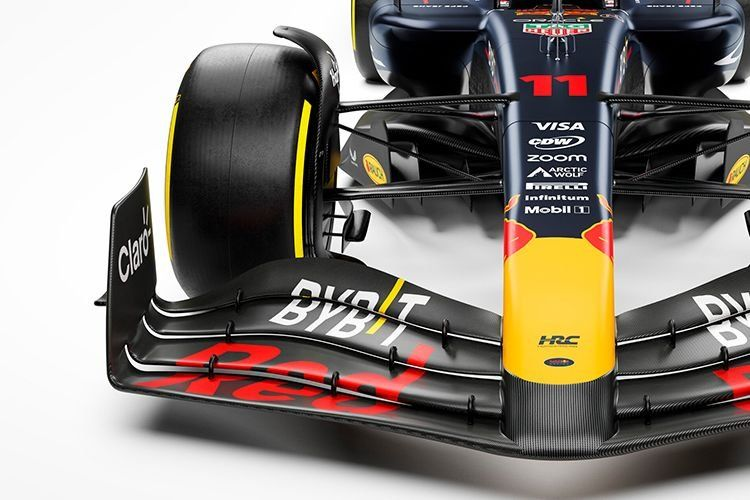
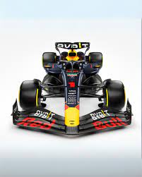
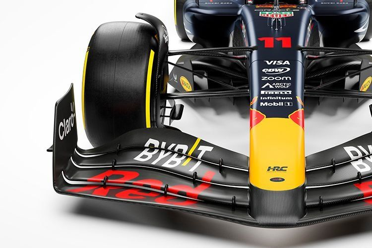
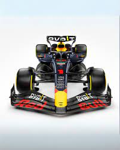

RB20
El Red Bull RB20 es un monoplaza de Fórmula 1 diseñado por Red Bull Racing para competir en la temporada 2024. El monoplaza fue presentado en la ciudad de Londres el 15 de febrero de 2024. El monoplaza es conducido por Max Verstappen y Sergio Pérez.


 


